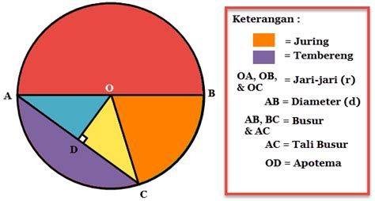
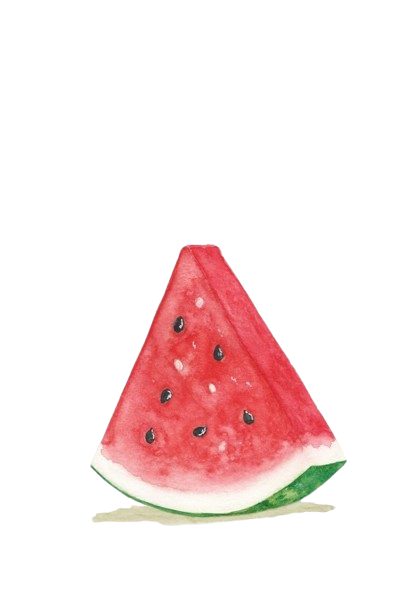
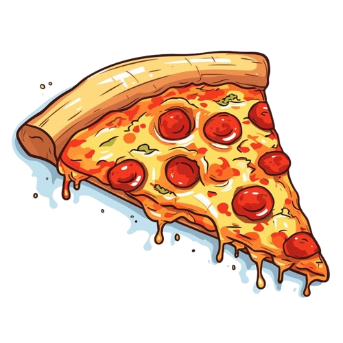
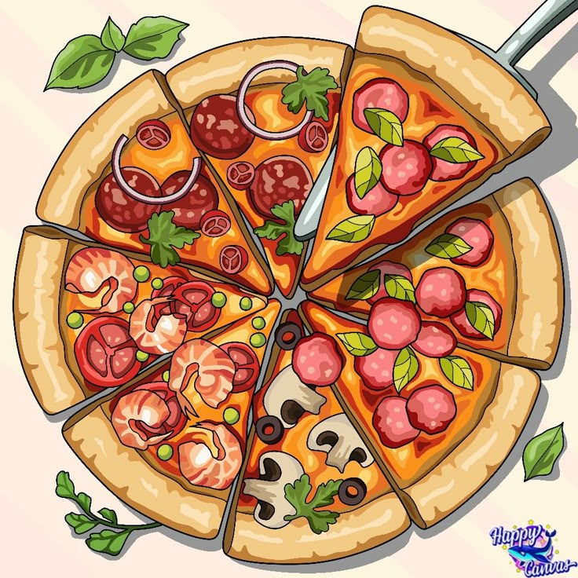
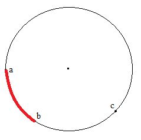
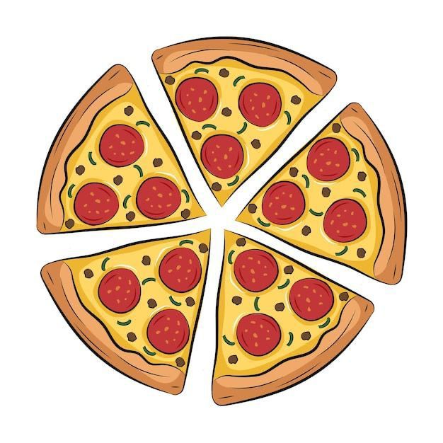
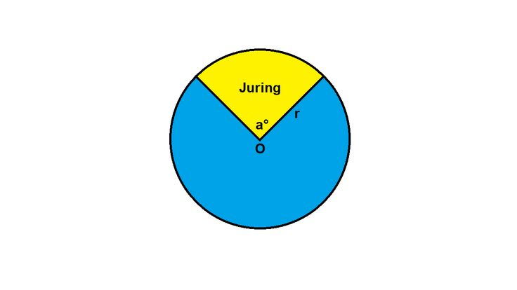
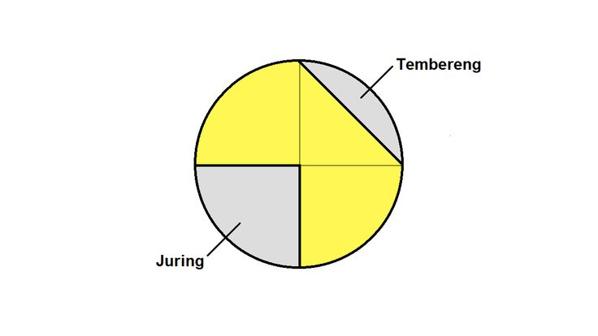

Pembelajaran 3: Busur, Juring, dan Tembereng

Tujuan Pembelajaran
- Memahami pengertian busur, juring, dan tembereng pada lingkaran
- Dapat menggambarkan dan menunjukkan bagian-bagian tersebut
- Mampu menggunakan konsep busur, juring, dan tembereng dalam soal nyata
🍕🔍 Yuk, Amati dan Pikirkan!
Pernahkah kamu memperhatikan bentuk potongan pizza saat akan disantap, atau melihat irisan semangka saat disajikan?
Sebenarnya, potongan-potongan itu menyimpan bentuk-bentuk bangun datar yang sedang kamu pelajari, lho!


Bayangkan kamu memotong pizza menjadi beberapa bagian...
Setiap potongan menunjukkan bagian dari lingkaran yang bisa disebut juring, busur, atau bahkan tembereng. Yuk kita kenali satu per satu!

- Juring: potongan pizza berbentuk segitiga dari tengah ke tepi.
- Busur: bagian melengkung di tepi potongan (biasanya bagian roti pinggirnya).
- Tembereng: area yang dibatasi oleh sebuah busur dan garis lurus (tali busur).
1. 🎯 Apa Itu Busur?
Bayangkan kamu menggambar sebuah garis lengkung di pinggiran lingkaran. Nah, itulah yang disebut busur! Busur menghubungkan dua titik pada lingkaran melalui jalur melengkung di tepinya.

Contoh: Pinggiran potongan pizza yang melengkung adalah busur!

2. 🍰 Apa Itu Juring?
Juring adalah bagian lingkaran yang dibentuk oleh dua jari-jari dan satu busur. Bentuknya seperti potongan kue tart atau irisan semangka.

Contoh: Irisan pizza dari tengah ke pinggir adalah juring!
3. 🌓 Apa Itu Tembereng?
Tembereng adalah area pada lingkaran yang dibatasi oleh satu busur dan satu tali busur (garis lurus yang menghubungkan dua titik pada lingkaran, tapi tidak dari pusat).

Contoh: Potongan pinggiran semangka yang tidak menyentuh pusat lingkaran.
🌟 Yuk lanjutkan mempelajari materi ini melalui contoh-contoh interaktif dan latihan seru! 🌟